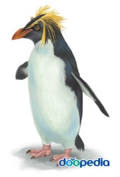

학명: Eudyptes chrysolophus

계: 동물
문: 척삭동물
강: 조류
목: 펭귄목
과: 펭귄과
멸종위기등급: 미평가(NE : Not Evaluated, 출처 : IUCN)
크기: 약 76cm
몸의 빛깔: 검정색(윗면), 흰색(아랫면)
생식: 난생
생활양식: 무리 생활
서식장소: 바다
분포지역: 아남극해역
몸길이 약 76cm이다. 머리와 목에서 등에 이르는 몸의 윗면은 검정색이고 아랫면은 흰색이다. 부리는 붉은색이고 눈 위에서 뒷머리 쪽에 주황색 깃털이 눈에 띈다. 다리는 분홍색이며 눈은 검다. 아남극해역의 사우스조지아섬·사우스셰틀랜드제도·사우스오크니제도·포클랜드제도·사우스샌드위치제도·부페토섬·프린스에드워드섬 등의 여러 섬에 분포한다. [네이버 지식백과] 마카로니펭귄 [macaroni penguin] (두산백과)